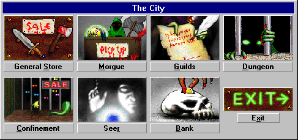

The City
"Let the city be your haven, the store your security, the bank your protection, the guilds your ways, the morgue your commitment to life, and the seer your link to the uncertain."
- "Crashland", Master of the Guilds

Familiarize yourself with the city. It is your haven.
Upon returning to the city from the dungeon, you will rest and heal yourself (aging in the process). This process will restore your hits, replenish spell points, and cure any poison or disease. It will also heal any companions.
Additional Topics:
Move to the next section to read about the City Bank.
Move to the previous section to read about the Toolbar.
M1: "The Depths of Dejenol" is a Trademark of Decklin's Domain Ltd and is © Copyright 1994-2026 All Rights Reserved